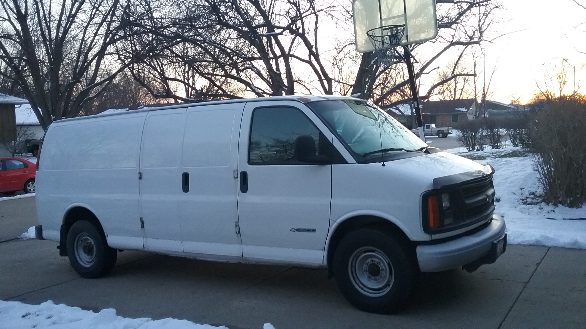
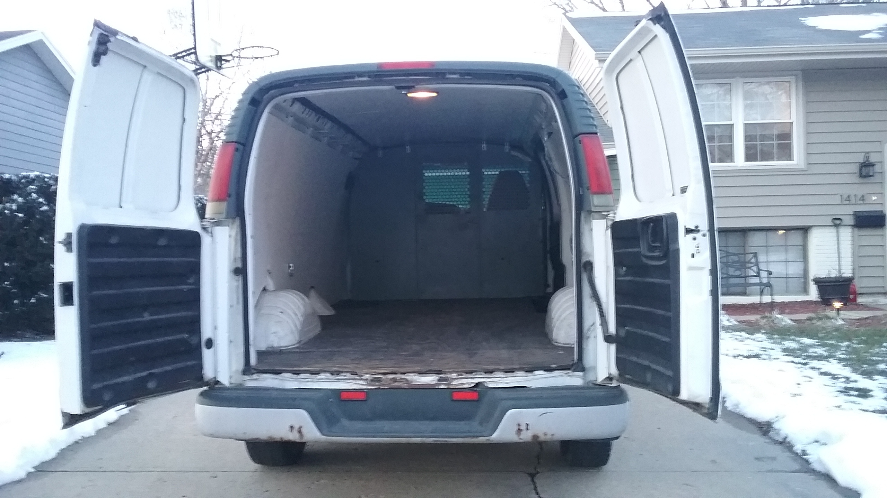

Van build
This is my story of building a van to travel and live out of. You can read some other stories of van setups which I've taken some inspiration from.
Purchasing the van
I purchased this van for $3k. It's a '01 Chevy Express. 
Interior Layout
I want the following in my van: Bed Frame, Hammock, Shelves, Mini-Table, and something to hold the solar batteries. A diagram from top-down:
Shelves
Fridge
Solar
|------------|---|--|--||
|------------|---|--|--||
| | |
| | |
6ft (Wide) | Bed | | Front
| (60"x80") | |
| | |
| |----------|
|------------| Door |
|------------|----------|
11ft Length
Then, the interior side opposite the door would look like:
18in
|------------|---|------|
| | S | |
| | H | |
| Bed | E | |
4ft (Tall) |------------| L |--|--||
| Empty | V | | ||
18in or 2ft | Space | S | | ||
|------------|---|--|--||
11ft Length
Fridge
Solar
Cleaning, flooring, and insulation
My plan is to put in some heavy duty carpet (todo: type/kind) on the floor and insulate the sides with (todo: what R-value and kind). R-13 Carpet Purchase
Bed Frame
Shelving / Kitchen
Solar Power
Desk Area
- Or just a beanbag chair for now?